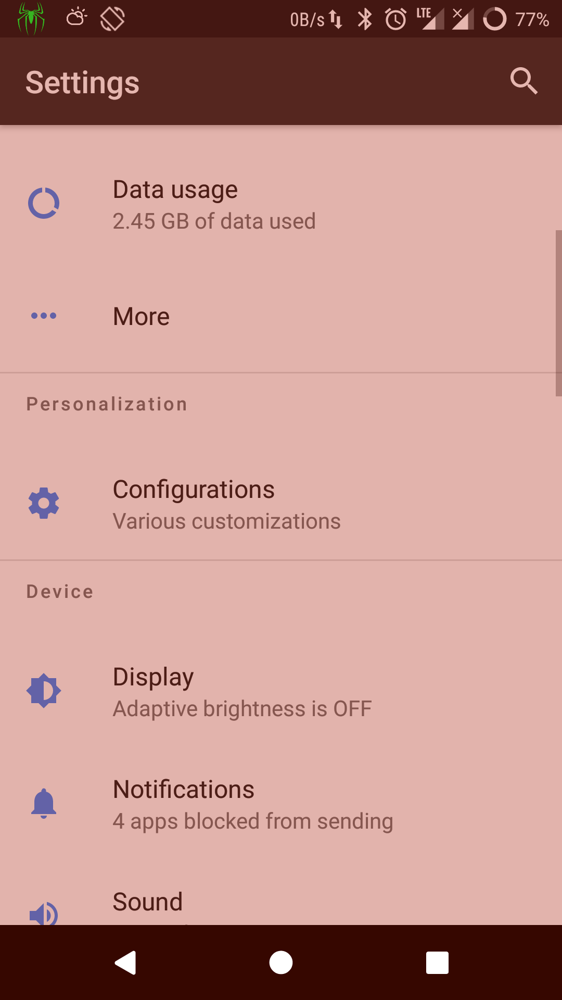
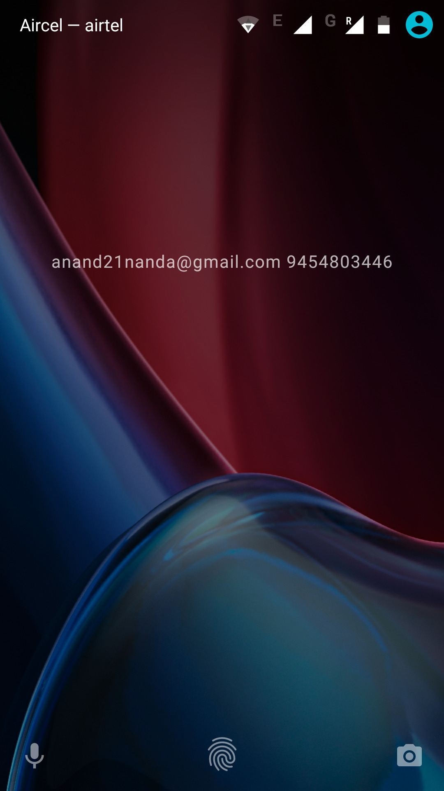

Remove Clock From LockScreen/StatusBar On Android RR
Last year, I wrote a blog post on how to remove clock from lock screen and status bar if xposed is installed on your android device. You can also do this without xposed if you are using RR(Resurrection Remix) as it comes with a lot of inbuilt customization.
Remove Clock From LockScreen
To remove clock from lockscreen, go to Settings -> Configurations -> Lock screen -> Show lock screen lock.



Remove Time From StatusBar
To remove clock from status bar, go to Settings -> Configurations -> Status bar -> System UI tuner -> Time -> Dont show this icon.


Once you do this, you will have a clean lockscreen and statusbar without any date or time them.


Chillar Anand
A blog about python, careers & life.
To contact me, send a message here.